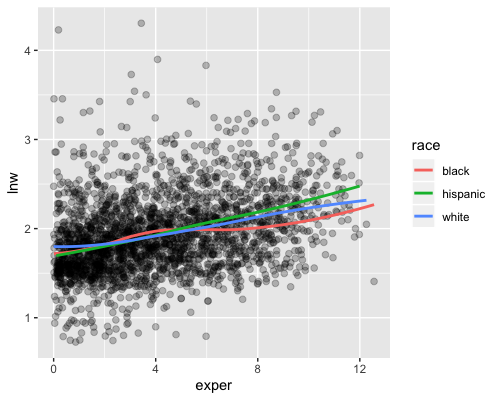

Final
Puede realizarse individual o en parejas.
Enviar por correo electónico documento final (html ó pdf).
Entregar jueves 12 de diciembre antes de las 18:00 hr, después de eso se califica sobre 7 (máximo entregar sábado 14 a las 13:00 hrs).
Incluir código y respuestas que describan lo que se hizo.
Dudas y artículo para pregunta 3 aquí.
1. Inferencia gráfica
Para este ejercicio utilizaremos los datos de un estudio longitudinal de Singer y Willet 2003 (wages). En este estudio se visitó a hombres en edad laboral que habitan en EUA, se visitó a cada sujeto entre 1 y 13 veces, en cada visita se registraró, entre otras variables:
id: identificador de sujeto
hgc: grado de educación más alto completado
lnw : logaritmo natural del salario
exper: años de experiencia laboral
raza: hispanic, black, white (si las dos primeras son cero)El objetivo del ejercicio es estudiar la relación entre salario y experiencia laboral por raza para aquellos sujetos cuyo año máximo de estudios completados es igual a 9, 10 u 11, estos son sujetos que abandonaron sus estudios durante preparatoria. Seguiremos un enfoque no paramétrico que consiste en ajustar un suavizador para cada grupo de raza (blanco, hispano o negro) como se muestra en la siguiente gráfica.

Utilizaremos una prueba de hipótesis gráfica para determinar si existe una diferencia significativa entre las curvas.
- Preparación de los datos.
Selecciona los sujetos con grado de estudios completado igual a 9, 10 u 11.
Elimina las observaciones donde el logaritmo del salario (lnw) es mayor a 3.5.
Crea una variable correspondiente a raza, un sujeto es de raza hispana si la variable hispanic toma el valor 1, de raza negra si la variable black toma el valor 1 y de raza blanca si las dos anteriores son cero.
Crea un subconjunto de la base de datos de tal manera que tengas el mismo número de sujetos distintos en cada grupo de raza. Nota: habrá el mismo número de sujetos en cada grupo pero el número de observaciones puede diferir pues los sujetos fueron visitados un número distinto de veces.
2 Prueba de hipótesis visual
El escenario nulo consiste en que no hay diferencia entre las razas. Para generar los datos nulos, la etiqueta de raza de cada sujeto se permuta, es decir, se reasigna la raza de cada sujeto de manera aleatoria (para todas las mediciones de un sujeto dado se reasigna una misma raza). Genera 9 conjuntos de datos nulos y para cada uno ajusta una curva loess siguiendo la instrucción de la gráfica de arriba. Crea una gráfica de paneles donde incluyas los 9 conjuntos nulos y los datos reales, estos últimos estarán escondidos de manera aleatoria.
Realiza la siguiente pregunta a una o más personas que no tomen la clase:
Las siguientes 10 gráficas muestran suavizamientos de log(salarios) por años de experiencia laboral. Una de ellas usa datos reales y las otras 9 son datos nulos, generados bajo el supuesto de que no existe diferencia entre los subgrupos. ¿Cuál es la gráfica más distinta?
Reporta si las personas cuestionadas pudieron distinguir los datos.
¿Cuál es tu conclusión de la prueba de hipótesis visual?
¿A cuántas personas preguntaste y cuál es el valor p de la prueba?
2. Simulación para el cálculo de tamaños de muestra
En el conteo rápido del estado de Guanajuato, se calculó el tamaño de muestra fijando como objetivo que los intervalos del \(95\)% de confianza tuvieran una longitud máxima de 2 puntos porcentuales para todos los candidatos. En este ejercicio calcularás el tamaño de muestra mínimo que cumpla con el objetivo usando 3 diseños de muestreo distintos: 1) muestreo aleatorio simple (MAS), 2) estratificando con distrito local y 3) estratificando con distrito federal.
Utilizarás simulación y los resultados de las elecciones de gobernador en Guanajuato correspondientes al 2012.
En el caso de MAS, para cada tamaño de muestra \(n=50,100,200,300,400,500,600,700\):
Simula una muestra aleatoria de tamaño \(n\).
Calcula el estimador de razón (correspondiente a muestreo aleatorio simple) para cada candidato:
\[\hat{p}=\frac{\sum_{i} Y_{i}}{\sum_i X_{i}}\]
donde:
\(\hat{p}\) es la estimación de la proporción de votos que recibió el candidato en la elección.
\(Y_{i}\) es el número total de votos que recibió el candidato en la \(i\)-ésima casilla.
\(X_{i}\) es el número total de votos en la \(i\)-ésima casilla.
- Repite los pasos i y ii \(1000\) veces para estimar el error estándar para una muestra de tamaño \(n\).
Para cada estratificación (distrito_fed_17 y distrito_loc_17) y
tamaño de muestra \(n=50,100,200,300,400,500,600,700\):
- Simula una muestra estratificada de tamaño \(n\), donde el tamaño de muestra en cada estrato se asigna proporcional al tamaño del estrato, esto es, sea \(N_h\) el número de casillas en el \(h\)-ésimo estrato, entonces para el estrato \(h\) el número de casillas en la muestra será: \[n_h = N_h \cdot \frac{n}{\sum_j N_j}\]
- Calcula el estimador de razón combinado (correspondiente a muestreo estratificado) para cada candidato:
\[\hat{p}=\frac{\sum_h \frac{N_h}{n_h} \sum_i Y_{hi}}{\sum_h \frac{N_h}{n_h} \sum_i X_{hi}}\]
donde:
\(\hat{p}\) es la estimación de la proporción de votos que recibió el candidato en la elección.
\(Y_{hi}\) es el número total de votos que recibió el candidato en la \(i\)-ésima casillas, que pertence al \(h\)-ésimo estrato.
\(X_{hi}\) es el número total de votos en la \(i\)-ésima casilla, que pertence al \(h\)-ésimo estrato.
\(N_h\) es el número total de casillas en el \(h\)-ésimo estrato.
\(n_h\) es el número de casillas del \(h\)-ésimo estrato que se seleccionaron en la muestra.
- Repite los pasos i y ii \(1000\) veces para estimar el error estándar para una muestra de tamaño \(n\).
Ahora:
Reporta en una tabla el error estándar para cada candidato, tamaño de muestra y diseño (MAS y las dos estratificaciones propuestas).
Grafica los datos de la tabla: realiza una gráfica de paneles (con
facet_wrap()), cada partido en un panel, en el eje horizontal grafica el tamaño de muestra y en el eje vertical el error estándar, tendrás en una misma gráfica tres curvas, una para muestreo aleatorio simple y una para cada estratificación.¿Qué diseño y tamaño de muestra elegirías? Explica tu respuesta y de ser necesario repite los pasos i-iii para otros valores de \(n\).
3. MCMC
Siguiendo con el conteo rápido de Guanajuato, calcularás intervalos de confianza usando el modelo propuesto en Mendoza and Nieto-Barajas (2016).
Los autores proponen ajustar un modelo de manera independiente para cada candidato en cada estrato:
- Verosimilitud
\[X_{ij}^k\big|\theta_{ij},\tau_{ij}\sim N\bigg(n_i^k\theta_{ij}, \frac{\tau_{ij}}{n_i^k}\bigg)\]
para \(k=1,...,c_i\), \(i = 1,...,N\), \(j=1,...,J\)
- Iniciales
\[p(\theta_{i,j},\tau_{ij})\propto \tau_{ij}^{-1}I(\tau_{ij}>0)I(0<\theta_{i,j}<1)\]
- Posterior
\[p(\theta_{ij}, \tau_{ij}|X_{ij}) \sim N\bigg(\theta_{ij} \bigg| \frac{\sum_{k=1}^{c_i}x_{ij}^k}{\sum_{k=1}^{c_i}n_{i}^k}, \tau_{ij}\sum_{k=1}^{c_i}n_i^k\bigg)I(0<\theta_{ij}<1)\times Ga\bigg(\tau_{ij}\bigg|\frac{c_i-1}{2}, \frac{1}{2}\bigg[\sum_{k=1}^{c_i}\frac{(x_{ij}^k)^2}{n_i^k}-\frac{\big(\sum_{k=1}^{c_i}x_{ij}^k\big)^2}{\sum_{k=1}^{c_i}n_i^k}\bigg]\bigg)\] donde:
\(X_{ij}\) número de personas que favorecen al candidato \(j\) en el estrato \(i\).
\(X_{ij}^k\) número de personas que favorecen al candidato \(j\) en la casilla \(k\) del estrato \(i\).
\(n_i^k\) tamaño de la lista nominal en la \(k\)-ésima casilla del \(i\)-ésimo estrato.
\(\tau_{ij}/n_i^{k}\) es la precisión para cada candidato.
\(\theta_{ij}\) es la proporción de las personas en la lista nominal del estrato \(i\) que favorecen al \(j\)-ésimo partido.
\(c_i\) número de casillas del \(i\)-ésimo estrato en la muestra.
Los detalles del modelo los puedes encontrar en el artículo.
Implementa el modelo y estima los resultados electorales de Guanajuato con la muestra:
Reporta estimaciones puntuales (media posterior) e intervalos del 95% de credibilidad para cada candidato.
4. Modelos jerárquicos y Stan
Postestratificación es un método estándar que se utiliza para corregir las estimaciones obtenidas de muestreo probabilístico cuando hay distintas probabilidades de selección y para corregir no respuesta. A grandes rasgos, se divide la población en categorías y se estima la distribución de las respuestas en cada categoría, después se pondera cada categoría de acuerdo a su tamaño en la población. Típicamente las categorías se crean con variables demográficas (sexo, edad, …).
La dificultad que suele surgir en el proceso de postestratificación es que por una parte se desea crear las celdas lo más finas posible, considerando el cruce de muchas variables, con el objetivo de corregir en mayor medida posibles sesgos en las estimaciones; sin embargo, conforme aumenta el número de celdas el número de respondentes en cada una disminuye (muchas incluso quedan vacías) y esto conlleva a que las estimaciones dentro de cada celda sean poco precisas. Ante esta dificultad, la propuesta de MRP es modelar las respuestas condicional a las variables de postestratificación, cuando las categorías de la postestratificación siguen de manera natural estructuras jerárquicas (como hogares en estados) se puede mejorar la eficiencia de la estimación ajustando modelos multinivel.
Es así que MRP es una extensión a los ajustes de postestratificación clásicos que permite usar más categorías y por tanto información más detallada de la población. Una ventaja adicional es que además hace posible estimar la respuesta en subcategorias demográficas o geográficas. En este ejercicio reproduciremos el modelo que se ajusta en Park, Gelman, and Bafumi (2004) lo puedes descargar de esta liga.
En esta aplicación se utilizan encuestas de opinión pública en EUA, en particular modelamos la probabilidad de que un respondente prefiera al candidato Republicano como presidente y usando los datos de encuestas de CBS News levantadas previo a la elección presidencial de 1988.
Las variables demográficas que determinan las celdas de postestratificación son: sexo, raza negra, edad (categórica), grado educativo y estado, si construyéramos las celdas de postestratificación quedarían,
sexo(2) x raza negra(2) x edad(4) x educación(4) x estado(52) = 3264
celdas y tenemos únicamente 2193 entrevistas, por lo que un enfoque clásico utilizando todas las variables demográficas disponibles queda descartado.
Ahora, definimos el modelo multinivel a usar, usaremos regresión logística multinivel, en este planteamiento la variable \(y_i\) indica si la \(i\)-ésima persona apoyaba al candidato republicano o no, y se agregan todas las variables demográficas como covariables.
\[ \begin{aligned} P(y_i = 1) &= logit^{-1}(\beta^0 + \beta^{mujer}\cdot mujer_i + \beta^{neg}\cdot neg_i+\beta^{mujer, neg}\cdot mujer_i \cdot neg_i+ \\ & \beta_{edad(i)}^{edad} + \beta_{edad(i), edu(i)}^{edad,edu} + \beta_{estado(i)}^{estado}) \end{aligned} \]
En este ejemplo la estructura multinivel se reduce al coeficiente de estado que se modela con indicadoras de región y una medida del apoyo Republicano en el estado reportado en la elección previa.
\[ \beta_{j}\sim N(\beta_{region(j)}^{region}+\beta^{vprev}\cdot vprev_j, \sigma^2_{estado})\]
Ajustaremos este modelo usando el programa Stan, y utilizamos las estimaciones para hacer predicciones a nivel estado (\(\theta_s\)):
\[\theta_s=\frac{\sum_{j \in s}N_{j}\pi_j}{\sum_{j \in s}N_{j}}\]
donde \(N_j\) indica el número de individuos en cada estado que pertenecen a la \(j\)-ésima celda, la información para determinar las \(N_j\) se obtendrá del censo de población.
Implementación
Datos en election88, o en la carpeta data.
# preparación de los datos
library(haven)
# datos de encuestas
polls <- read_dta("data/polls.dta")
# nos quedamos con la última encuesta y eliminamos faltantes
last_poll <- polls %>%
filter(survey == 8) %>%
mutate(age_edu = paste0(age, edu),
age_edu_int = as.integer(as.factor(age_edu))) %>%
na.omit()
# datos de elecciones pasadas para utilizar como covariable y variable región
presvote <- read_dta("data/presvote.dta") %>%
cbind(region = c(3,4,4,3,4,4,1,1,5,3,3,4,4,2,2,2,2,3,3,1,1,1,2,2,3,2,4,2,4,
1,1,4,1,3,2,2,3,4,1,1,3,2,3,3,4,1,3,4,1,2,4))Los datos para el modelo serán:
x_person <- model.matrix(~ female + black + female * black, data = last_poll)
x_state <- model.matrix(~ -1 + factor(region) + g76_84pr, data = presvote)
data_list <- list(
n = nrow(last_poll),
n_age = n_distinct(last_poll$age),
n_age_edu = n_distinct(last_poll$age_edu_int),
n_edu = n_distinct(last_poll$edu),
n_state = max(last_poll$state),
mh = 3,
mm = 6,
age = last_poll$age,
edu = last_poll$edu,
age_edu = last_poll$age_edu_int,
state = last_poll$state,
y = last_poll$bush,
x_person = x_person[, -1],
x_state = x_state
)Y el código en Stan:
model_mrp <- "
data {
int n; // número de observaciones
int n_state; // número de estados
int n_age;
int n_edu;
int n_age_edu;
int age[n];
int edu[n];
int age_edu[n];
int mh; //número de covariables nivel persona
int mm; //número de covariables nivel estado
int<lower=0,upper=1> y[n];
matrix[n, mh] x_person; // covariables a nivel persona
int state[n];
matrix[n_state, mm] x_state; // covariables a nivel estado
}
parameters {
real beta_0;
vector[mh] beta;
vector[n_state] beta_state_raw;
vector[n_age] beta_age_raw;
vector[n_edu] beta_edu_raw;
vector[n_age_edu] beta_age_edu_raw;
real<lower=0> sigma_age;
real<lower=0> sigma_edu;
real<lower=0> sigma_age_edu;
real<lower=0> sigma_state;
vector[mm] alpha;
}
transformed parameters {
vector[n] reg_pred;
vector[n_state] beta_state;
vector[n_age] beta_age;
vector[n_edu] beta_edu;
vector[n_age_edu] beta_age_edu;
// parametrización no centrada
beta_age = beta_age_raw * sigma_age;
beta_edu = beta_edu_raw * sigma_edu;
beta_age_edu =beta_age_edu_raw * sigma_age_edu;
beta_state = beta_state_raw * sigma_state + x_state * alpha;
reg_pred = beta_0 + x_person * beta + beta_state[state] + beta_age[age] +
beta_edu[edu] + beta_age_edu[age_edu];
}
model {
y ~ bernoulli_logit(reg_pred);
beta_0 ~ normal(0, 1);
beta ~ normal(0, 1);
beta_age_raw ~ normal(0, 1);
beta_edu_raw ~ normal(0, 1);
beta_age_edu_raw ~ normal(0, 1);
beta_state_raw ~ normal(0, 1);
sigma_state ~ normal(0, 1);
sigma_age ~ normal(0, 1);
sigma_edu ~ normal(0, 1);
sigma_age_edu ~ normal(0, 1);
alpha ~ normal(0, 1);
}
"
cat(model_mrp, file = 'src/stan_files/model_mrp.stan')- Modelo. Ajusta el modelo y revisa convergencia, describe cuantas cadenas, iteraciones y etapa de calentamiento elegiste, además escribe como determinaste convergencia.
set.seed(83933)
stan_fit <- sampling(object = stan_cpp, data = data_list, chains = 3,
iter = 2000, control = list(adapt_delta = 0.95))- Genera las simulaciones de \(\theta_s\) para analizar las predicciones a nivel estado. Realiza una gráfica con intervalos de credibilidad del 95% para cada \(theta_s\).
El siguiente código predice para cada celda de la tabla del censo, vale la
pena notar, que para cada celda tenemos una lista en el vector pred con las
simuaciones que le corresponden.
# construct the n.sims x 3264 matrix
census88 <- read_dta("data/census88.dta")
params_sims <- as.data.frame(stan_fit, pars = c("beta_0", "beta", "beta_age",
"beta_edu", "beta_age_edu", "beta_state"))
))
pred_cell <- census88 %>%
mutate(age_edu = paste0(age, edu),
age_edu_int = as.integer(as.factor(age_edu))) %>%
rowwise() %>%
mutate(
pred = list(arm::invlogit(params_sims$beta_0 +
params_sims$`beta[1]` * female +
params_sims$`beta[2]` * black +
params_sims$`beta[3]` * female * black +
params_sims[, str_c("beta_age[", round(age), "]")] +
params_sims[, str_c("beta_edu[", round(edu), "]")] +
params_sims[, str_c("beta_age_edu[", age_edu_int, "]")] +
params_sims[, str_c("beta_state[", round(state), "]")]))
) Para hacer las estimaciones por estado hace falta ponderar por el número de casos en cada celda:
\[\theta_s=\frac{\sum_{j \in s}N_{j}\pi_j}{\sum_{j \in s}N_{j}}\]
Debarás calcular una simulación de cada \(\theta_s\) por cada simulación de \(\pi_j\) obtenida con el código de arriba.
Referencias
Mendoza, Manuel, and Luis E. Nieto-Barajas. 2016. “Quick Counts in the Mexican Presidential Elections: A Bayesian Approach.” Electoral Studies 43 (C):124–32. https://doi.org/10.1016/j.electstud.2016.06.007.
Park, David K., Andrew Gelman, and Joseph Bafumi. 2004. “Bayesian Multilevel Estimation with Poststratification: State-Level Estimates from National Polls.” Political Analysis 12 (04):375–85. https://EconPapers.repec.org/RePEc:cup:polals:v:12:y:2004:i:04:p:375-385_00.